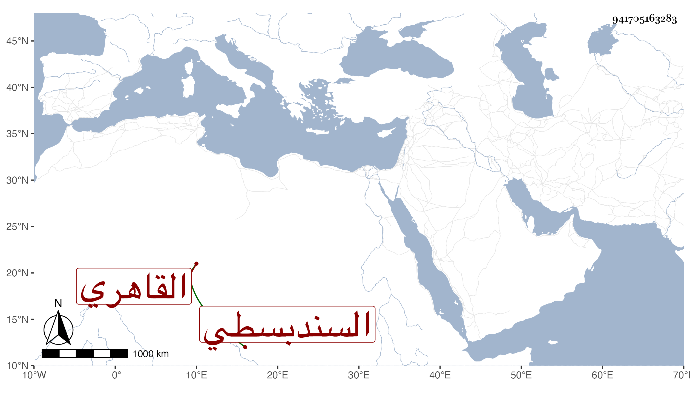

0902Sakhawi.DawLamic.ITO20230111-ara1.EIS1600.941705163283
Biography ID: 941705163283
190
عبد الرحمن بن بكتمر السندبسطي ثم القاهري أحد أصحاب الزاهد وصاحب الزاوية المجاورة لجامع شيخه وفيها محل دفنه أخذ عنه جماعة كثيرون منهم محمد البدوي وذكروا له أحوالا صالحة وكانت له طاحون يقتات منها ويعمر من فاضلها الزاوية المشار اليها التي لم يكملها وانما أكملها صاحبه الشيخ مدين . مات في سنة أربعين أو قبلها رحمه الله وإيانا .
